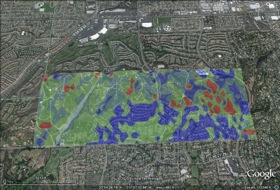

In the field
Western Washington State, USA

In May 2010, Earth
Economics completed a comprehensive Ecosystem Service and
Flood Protection Analysis for the Chehalis Basin in Washington
State. Ecosystem services, such as flood protection are
concerned with the way natural systems affect people. With this
in mind, ARIES produces four types of models, based on GIS and
other data: 1) Beneficiary models; 2) Provisioning models; 3)
Sink models and 4) Flow models.

West Coyote Hills, California

ARIES was used to quantify flood protection throughout the San
Gabriel River/Coyote Creek watershed in northwestern Orange
County, California. A higher-resolution analysis of flood
regulation provided by an undeveloped 600-acre site being
considered for development was also conducted. Southern
California is characterized by its flash flood system due to the
runoff-prone topography, climate, and highly urbanized land
cover, where floods can reach full peak in a matter of minutes.
These factors make the identification and protection of natural
flood regulating regions vital to sustainable urban
development.
At a glance
Flood regulation and its beneficiaries: ARIES
maps sources of floodwater as precipitation or snowmelt, "sinks"
of floodwater as areas that promote infiltration or detention of
floodwater, and beneficiaries of flood regulation as homeowners,
farmers, or users of public infrastructure within floodplains.
Flood mitigation can occur via natural "green infrastructure"
designed to promote natural infiltration and dispersal of
floodwater, or engineered "gray infrastructure" such as dams,
detention basins, and levees. Flow models show the areas that
contribute floodwater to a specific area at risk of flooding. By
comparing baseline conditions with scenarios to manage green
infrastructure (e.g., forest management, levee setbacks) or gray
infrastructure (constructing new flood control works), we can
compare alternative levels of ecosystem service provision against
life cycle costs of such investments.
Event-based modeling: ARIES currently models
flood vulnerability based on coarse-scale data (e.g., annual or
monthly average precipitation and snowmelt). Collecting data to
support event-based modeling is difficult, as it requires
fine-scale estimation of soil, streamflow, and weather conditions.
We will seek to include existing flood models and their outputs in
next generation ARIES models, increasing the accuracy and policy
relevance of model outputs. Even in their current form, however,
ARIES flood model outputs are useful in comparing vulnerability
and exploring tradeoffs between multiple ecosystem services in
alternative scenarios for flood management.